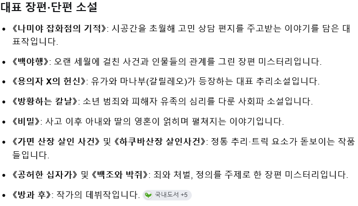
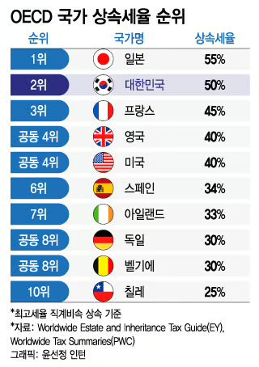
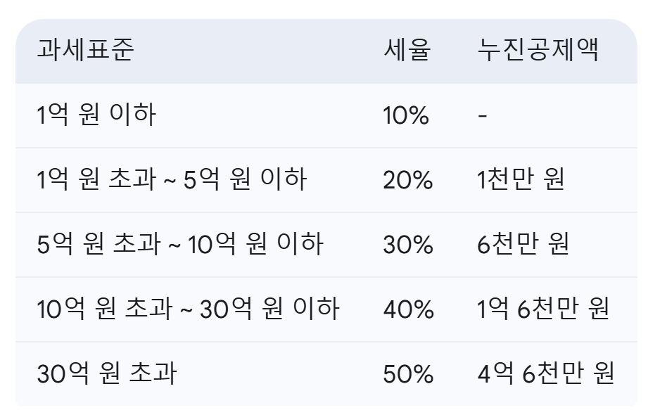
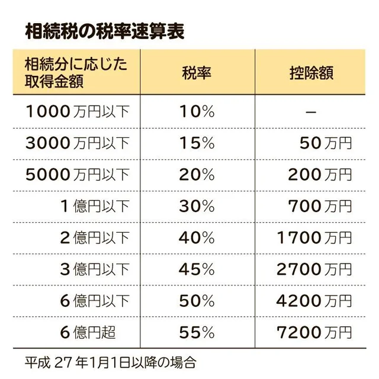

https://theqoo.net/square/4419039540

히가시노 게이고 씨 50억 엔의 유산에 대해
상속세 31억 엔을 누나 두 분이 내야 합니다.
아주 중요한 점은 히가시노 게이고 씨가 100편 이상의 작품을 썼고,
그중 60% 이상이 영상화되었다는 것입니다.
이 50억 엔은 이미 세금을 낸 뒤의 금액입니다.
즉 실제 벌어들인 돈은 100억 엔 이상이고
국가는 그중 절반 이상을 이미 세금으로 가져간 겁니다.
그 나머지가 50억 엔인데, 그 돈에서 또다시
31억 엔을 상속세로 가져가려 하고 있습니다.
즉 100억 엔을 벌어들인 데 대해
81억 엔의 세금을 국가에 내야 한다는 겁니다.
이런 나라가 세상에 어디 있습니까?
이러면 해외의 유력한 사람들은
일본에서 살려고 절대 생각하지 않을 겁니다.
그리고 앞으로도 작가든 작곡가든
열심히 해보려는 의욕도 사라질 겁니다.
이중 과세다, 일할 의욕 사라진다
vs
하가시노가 낸거지 누나들이 낸거 아니지 않냐, 부의 재분배다
의견 갈리는 듯
50억엔 = 약 425억
31억엔 = 약 263억
차액 = 162억

간단하게 한화 500억이라고 치면
한국 상속세 세율로는 공제액 빼고
세금 약 236억 정도임
+
상속세율이 무조건 저 비율이 아님

한국

일본
아하 나름 유도리(?)가 있군 ㄱㅅㄱㅅ